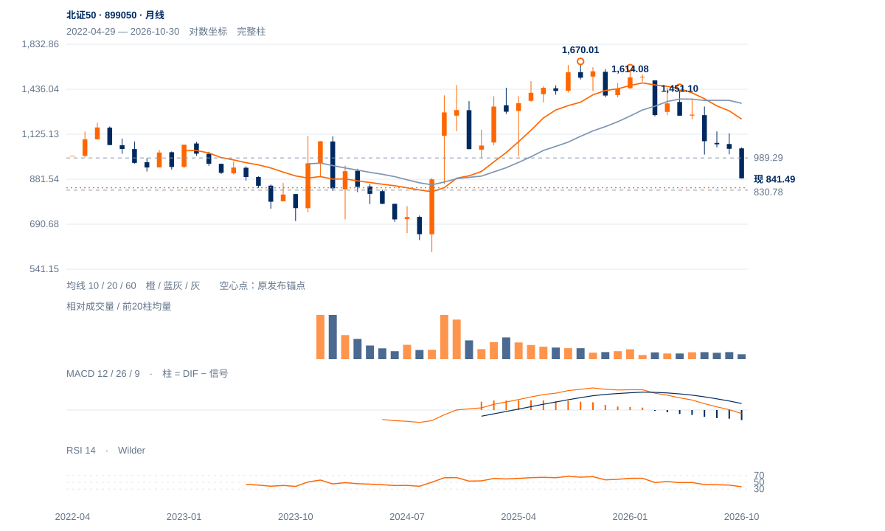

旧底下破延续
未来1—5个交易日仍偏破位延续，847—850回收是最直接反证；反弹在该处受阻时，818.63再测试风险较高，不强设未有形态依据的更低目标。
未来1—5个交易日仍偏破位延续，847—850回收是最直接反证；反弹在该处受阻时，818.63再测试风险较高，不强设未有形态依据的更低目标。
未来2—6周以“旧底下破延续”为基准。旧谷附近反弹若不能越过较低高区，中期下降结构继续约束反抽空间。先日收回847—850并保持；原885、922及950连续两日上层升级条件保留。847.36原日收失效17日已发生，18日反抽未修复；后续收低818.63增加下降扩展，不把旧条件挪低。
未来1—3个月仍是2026年1364大高以来的中期下降，984—1009长期旧谷区转成远端供应，尚无完整大底。只有周线较高谷与回收1009相继出现才提高结构重建判断；实际历史起于2022，不补造60月均衡。

展开图表 ↗2025年1670后高区递降，984—1009旧承接区已在上方，宽周期下降尚未被扭转。较短上市历史不支持补造更长周期指标。完整10月20月均衡1,330.55；本月价格变化尚未成为已完成月线确认。
已完成周线的主要锚点：2026-07-21低1,007.64；2026-08-10高1,142.03；2026-09-14低1,009.08。从这些同级峰谷观察，中期恢复尚需较高谷与越过反弹高点相继出现，单根下影或当日涨幅不能替代。本周仍未结束，18日表现只作进行中周的观察。
18日最高850.22短暂越过847.36旧谷，收831.86却再回下方；连续两日低收说明回抽没有恢复支撑。最低818.63后虽有下影，收盘只在日幅约42%，明显弱于科创与创业板。ER20约0.35，高于多数国内指数，近期净方向更偏下降，不能据减量0.83倍认定卖压已消失。
2026-09-23高1,079.99（2026-10-08确认）；2026-10-19低930.22（2026-10-26确认）；2026-11-04低847.36（2026-11-11确认）
先日收回847—850并保持；原885、922及950连续两日上层升级条件保留。
847.36原日收失效17日已发生，18日反抽未修复；后续收低818.63增加下降扩展，不把旧条件挪低。
新低附近量未放大，日内也出现回收，存在突然超跌反弹的可能；但今天旧谷上方无法保持，比单看下影更直接地支持偏弱判断。
RSI14 32.55；ATR14 32.81；相对成交量0.83倍；ER20 0.351。
完整周线至11月13日，完整月线至10月30日；本周与11月尚未结束。指数价格不复权；长期历史按实际可得起点。